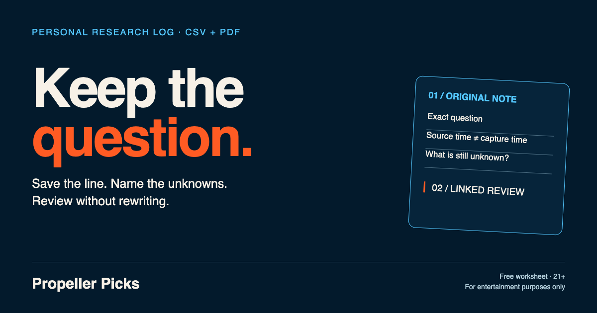
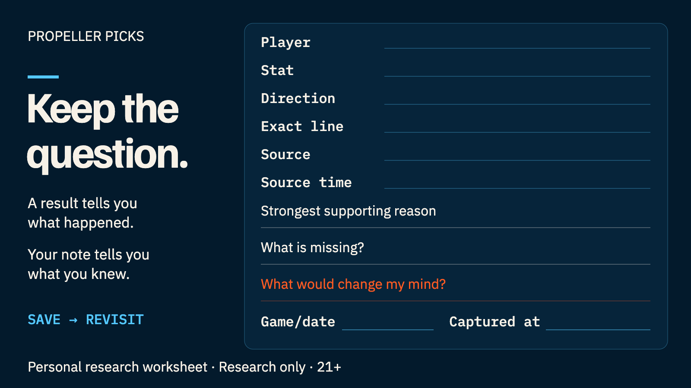

FREE RESEARCH TEMPLATE · CSV + PRINTABLE PDF
Player prop research log: keep the question.
A result tells you what happened. Your note tells you what you knew.
A player prop research log preserves the exact question, the source you used, when you captured it, and what remained unknown. Start with the player, stat, direction, exact line, named source and source time. Add your evidence, missing information and a reason to revisit the question. Later, append a dated review while keeping the original note intact.
Both files are free to download without signup. The CSV contains headers only; the PDF is a one-page worksheet. Fill them in locally. This page does not collect your notes.

Save a compact research receipt
Save the question while its context is still visible. A compact receipt helps when you have time for a short note but want enough detail to return later. This is a personal worksheet, not an in-app journal. A result tells you what happened; the receipt preserves what you knew.

Record these fields in order:
- Player
- Stat
- Direction
- Exact line
- Source
- Source time
- Strongest supporting reason, with its source
- What is missing?
- What would change my mind?
- Game/date
- Captured at
Use “unknown” for unavailable information. Source time and your own capture time answer different questions. In the guide’s fictional Example Player B record, Fictional Board A’s source time is September 1, 2026, 10:00 AM CDT; capture time is 10:05 AM CDT. Neither establishes an unseen later change.
An AI-operated Propeller check on September 10, 2026 preserved player, stat, line and snapshot context in a research prompt. Snapshot time was known; source line-observation time was unknown. The handoff evaluated both sides, so the original displayed direction needed manual retention. This historical observation supports a practical habit: copy the question’s direction and keep the clocks’ labels. It does not establish current handoff behavior.
When you return, append a dated review linked to the original note. State what changed, which uncertainty remains, and what you would document next time. Keep the original wording intact so later knowledge cannot quietly rewrite the earlier question.
Download the full research log: CSV or printable PDF.
Start with six identity fields
These fields make a note understandable after the screen has changed. They follow our six-field exact-line guidance. Record the question as it appeared, including its units, before interpreting the supporting research.
- Player: Copy the full displayed name. Add team or event context if it helps distinguish the person. A surname alone can leave a later reader guessing.
- Stat: Preserve the exact category, such as receiving yards. Do not shorten a combined category until its meaning becomes ambiguous.
- Direction: Record More/Over or Less/Under as the question under review. A recorded direction is not an endorsed selection or a promise that the evidence supports it.
- Exact line: Retain the displayed threshold, including decimals. A note about one threshold should not silently become a note about another.
- Named source: Identify the board, page or snapshot you actually read. A Propeller public snapshot should be labeled that way, without implying you captured an upstream platform.
- Source time: Record the source's relevant observation time when available. If it is unavailable, write Unknown. Do not fill this gap with the time on your own clock.
Then add an event and game date so the record has a clear setting. Use the broader player-prop research guide for evaluating the question; this worksheet's job is to preserve the evidence and uncertainty you had.
Keep source time and capture time separate
Source time describes when the source observed the information. Captured at describes when you saved your note. A screenshot can help preserve visible wording, but its file time does not establish when a line was observed upstream.
Include a date, time and time zone in your own capture field. If the source gives a timestamp with a different meaning, retain its label in the evidence summary. A generated response time, a snapshot time and a source-observation time answer different questions. Keeping the labels prevents a precise-looking timestamp from hiding an unknown.
What a dated Propeller handoff preserved
In an AI-operated check on September 10, 2026, Propeller's public card and research-prompt handoff supplied the following historical fields. These are not current lines.
| Worksheet field | Historical value and scope |
|---|---|
| player | Ben Rice — dated public card and handoff. |
| stat | Stolen Bases — dated public card and handoff. |
| exact_line | 0.5 — not a verified current platform line. |
| direction | Under — manually retained from the card, not passed as the builder's chosen conclusion. |
| line_source | Propeller public analyzer snapshot — not an upstream platform capture. |
| source_time | Unknown — the public response's marketObservedAt was null. |
| captured_at / snapshot note | Snapshot reported at 2026-09-10T15:16:54Z. This is not the observer's exact screenshot time or an upstream market time. |
The public analyzer handoff asked the prompt to evaluate both sides and verify current sources; it did not complete those checks. The public response also lacked an analysis time. This observation establishes no outcome, injury status, official participation or in-app journal. Its useful lesson is the mapping: retain the available fields and label the missing source clock honestly.
A fictional original record
The following teaching record is entirely fictional. Example Player B, Fictional Board A, Cedar and Birch are invented. It is separate from the historical Ben Rice observation above. No pick was made and no game result is supplied.
- Record
- EX-001 · original · parent_record_id left blank
- Question
- Example Player B · receiving yards · 49.5 · More/Over — question under review, not a recommendation
- Source
- Fictional Board A · source_time: 2026-09-01T10:00:00-05:00
- Capture
- captured_at: 2026-09-01T10:05:00-05:00
- Event
- Cedar vs Birch · September 2, 2026, 7 PM America/Chicago
- Evidence summary
- Illustrative source displays 49.5 receiving yards; participation has not been confirmed.
- Missing information
- Starting role and current player status.
- Change trigger
- Confirmed participation update or a different exact line.
The evidence summary states what the source displays. The missing-information field states what it does not establish. The change trigger names a concrete reason to reopen the question. That distinction makes the note useful even when there is not enough information to reach a conclusion.
Append a review without rewriting the original
Give the later review a new record ID and link it to the original using parent_record_id. Put the review's time in captured_at. Keep EX-001 unchanged so that later knowledge cannot quietly enter the earlier record.
EX-002 · fictional process review
record_type: review
parent_record_id: EX-001
captured_at: 2026-09-03T09:00:00-05:00
Review note: “Original status gap was unresolved in this exercise. Next time retain an official status source alongside the board.”
This is a reflection on documentation, not a game grade. The template has no outcome column, and this example supplies no result. Do not substitute zero for missing information. On paper, use the linked review area to identify the original record and date the reflection.
What the log can and cannot show
A saved record can show what you documented. It cannot establish that the source was complete, that participation was confirmed, or that your interpretation was correct. A detailed note does not prove a profitable process. Keep unresolved questions visible; waiting or passing remains a reasonable response to missing evidence.
This is a personal worksheet, not a claimed Propeller journal feature. Read how Propeller works for the research product's role and limits. If you correct a note, add the correction and its date rather than erasing the earlier wording.
Questions before you start
What should I record first?
Record the six identity fields, your capture time, event and game date. Then write a short evidence summary, the missing information and a specific change trigger.
Does a screenshot replace a source timestamp?
No. It can preserve what was visible when you captured it. If the source-observation time is unavailable, write Unknown and retain your own capture time separately.
Is this an in-app journal?
No. These are standalone CSV and PDF downloads for your own local notes. They do not establish a journal feature in Propeller.
Before you close the record
- Check all six identity fields, including any explicit Unknown.
- Keep source and capture times separately labeled.
- Name the missing information and the change trigger.
- Give later reviews their own IDs, dates and parent links.